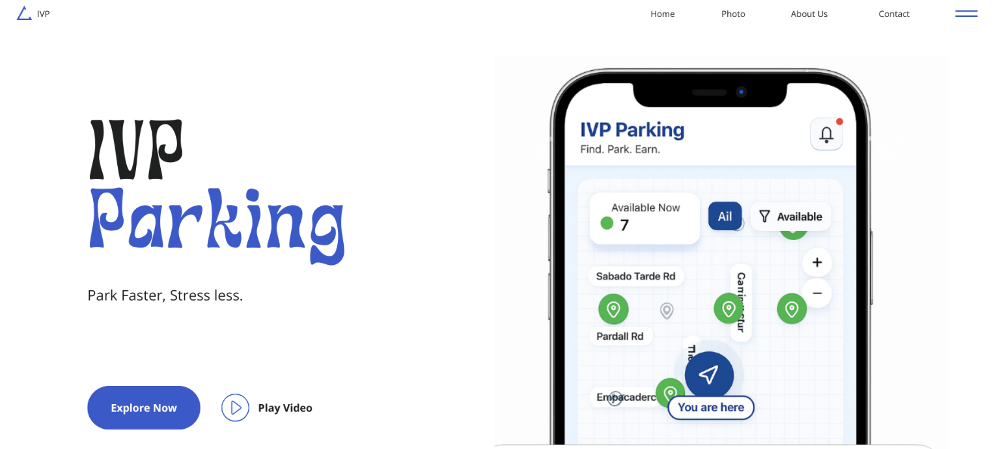

01
IVP Project

IVP is a collaborative mobile-app concept addressing the difficulty of finding parking in Isla Vista. The concept combines real-time parking information, simple interaction, user incentives, and local-business partnerships. I analyzed information relevant to our App and focused on the financial assets of our concept. I also contributed to the business and marekting potential of the parking app.
↑ Back to contents02
Trance Song Project
This project is an original trance-inspired electronic composition created through code in a Jupyter notebook. The arrangement gradually builds and shifts between sections. I used basic Python to explorin how repetition, layering, and small changes in sound can shape the progression of an electronic track.
↑ Back to contents03
Expansion Project
Expansion Through Creativity is an interactive LEGO sculpture exploring architectural growth, collaboration, and iterative design.The project evolved through multiple physical prototypes before reaching the final installation. The accompanying website documents the complete design process, inspirations, iterations, and reflections in a way that shows that idolizes the concept of Randomness in physical form.
↑ Back to contents